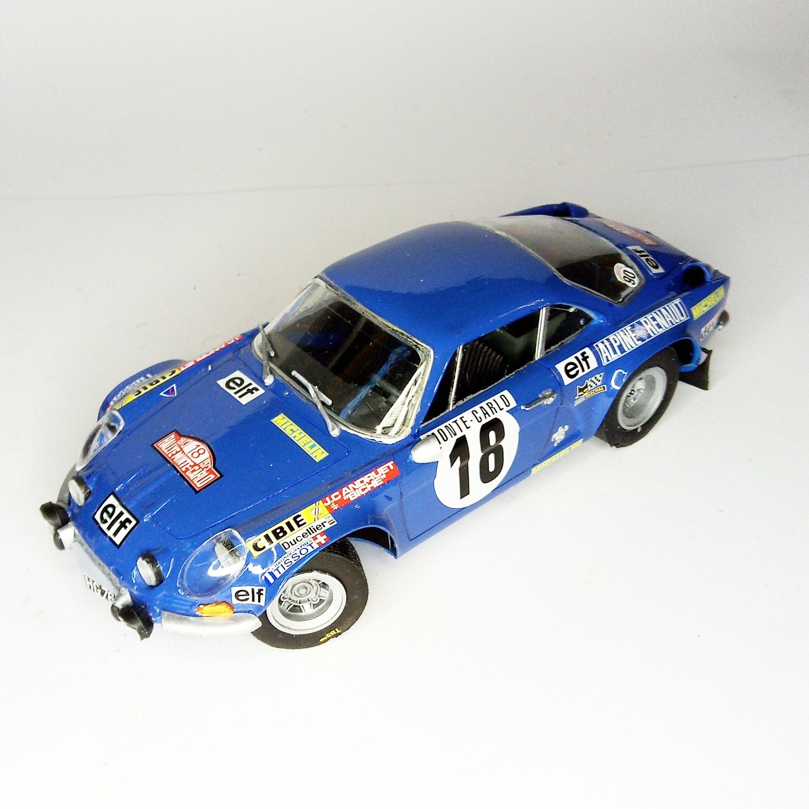

Auto e veicoli stradali · scale model archive
Alpine A110 S 1600
Alpine A110 S 1600 — Kit: Heller, Scale: 1/24. Andruet 'Biche' winner 1973 Montecarlo rallye #1/24 #Heller

Photo gallery
English description
Andruet 'Biche' winner 1973 Montecarlo rallye
#1/24 #Heller
Descrizione italiana
Andruet 'Biche' vincitrice 1973 Monteautolo rallye.